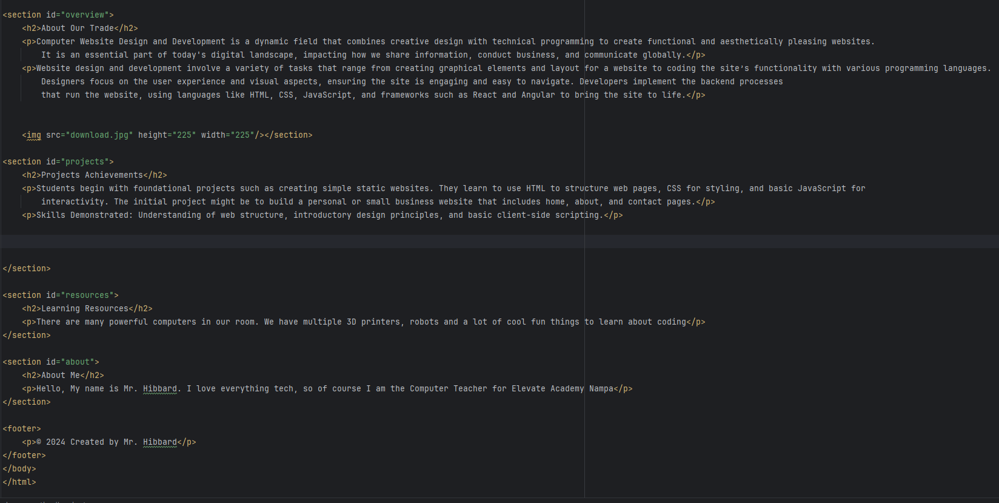

Computer Website Design and Development is a dynamic field that combines creative design with technical programming to create functional and aesthetically pleasing websites. It is an essential part of today's digital landscape, impacting how we share information, conduct business, and communicate globally.
Website design and development involve a variety of tasks that range from creating graphical elements and layout for a website to coding the site’s functionality with various programming languages. Designers focus on the user experience and visual aspects, ensuring the site is engaging and easy to navigate. Developers implement the backend processes that run the website, using languages like HTML, CSS, JavaScript, and frameworks such as React and Angular to bring the site to life.
Students begin with foundational projects such as creating simple static websites. They learn to use HTML to structure web pages, CSS for styling, and basic JavaScript for interactivity. The initial project might be to build a personal or small business website that includes home, about, and contact pages.
Skills Demonstrated: Understanding of web structure, introductory design principles, and basic client-side scripting.
There are many powerful computers in our room. We have multiple 3D printers, robots and a lot of cool fun things to learn about coding
Hello, My name is Mr. Hibbard. I love everything tech, so of course I am the Computer Teacher for Elevate Academy Nampa